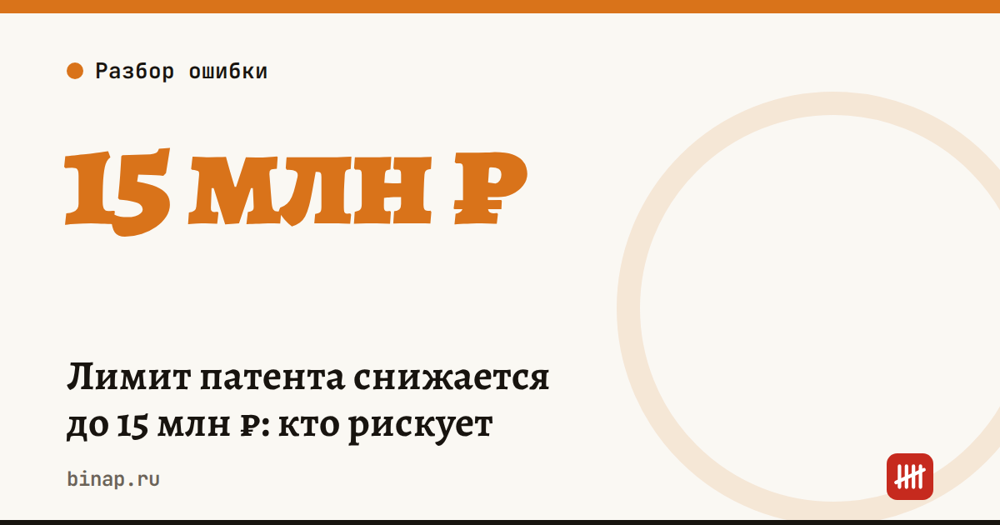

Лимит патента снижается до 15 млн ₽: кто рискует

Патент становится тесным. Лимит дохода для ПСН снижается по графику: 20 млн ₽ в 2026 году, 15 млн ₽ в 2027-м, 10 млн ₽ с 2028-го.
Таблица с данными
| Год | Лимит дохода |
|---|---|
| 2026 | 20 млн ₽ |
| 2027 | 15 млн ₽ |
| 2028 | 10 млн ₽ |
Кто в зоне риска: ИП на патенте с доходом больше 1,2 млн ₽ в месяц. Превысили лимит — теряете патент с начала его срока. Если заранее не позаботились о запасном режиме, окажетесь на общей системе: НДФЛ, НДС и сложный учёт.
Что сделать до 31 декабря:
- Посчитайте доход за 2026 год и прогноз на 2027-й.
- Если близко к 15 млн ₽ — подайте уведомление о переходе на УСН до 31 декабря. Патент и УСН можно совмещать.
- Проверьте, не станете ли вы плательщиком НДС на УСН: порог — 20 млн ₽ дохода.
В 2026 году ИП, слетевшим с патента, разрешили задним числом перейти на УСН. Рассчитывать на такую поблажку каждый год не стоит.
Источники